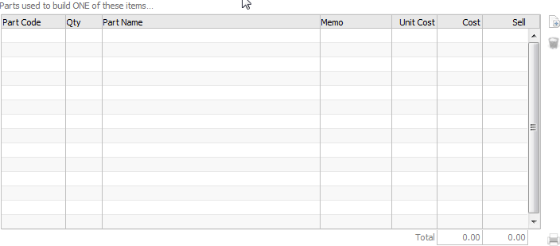
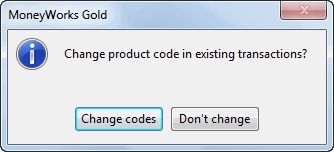
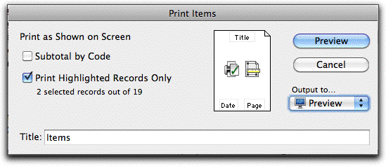
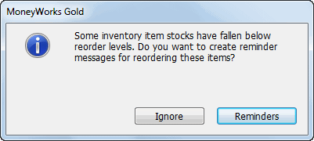
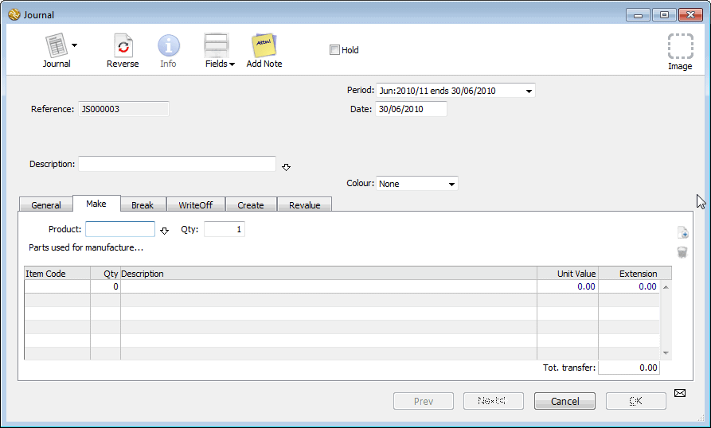
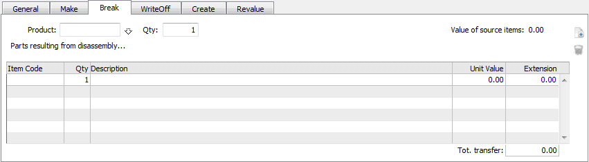
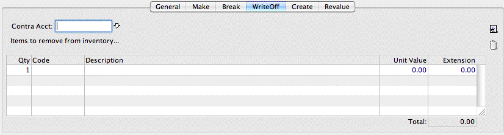
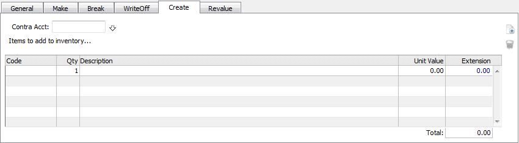
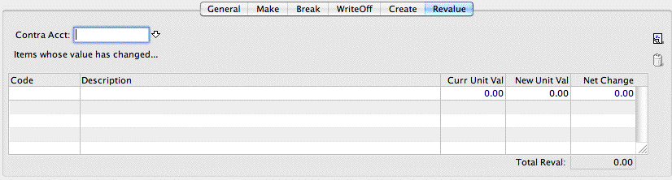
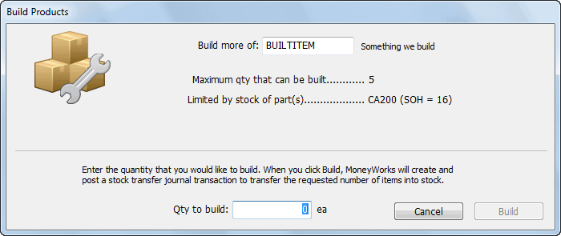

A product can be manufactured from other product items. You can build the product whenever you require it, or it can be automatically built whenever it is sold.
Set the Manufacture this Item According to Bill of Materials check box
The Recipe list will be enabled.
You need to specify how the item is manufactured. This includes the manufacturing batch size and the components or recipe for the item.
Minimum Build Qty Use the Minimum Build Qty field to specify the number of units that can be physically made at one time. For example an injection moulder may always make comedy plastic noses ten at a time, using 300g of plastic powder. In this case enter 10 into the Minimum Build Qty field. This tells MoneyWorks that it can’t auto-build just (say) three noses, because the nose injection moulder just doesn’t work that way.
Auto-Build Whenever Necessary Set this option if you want MoneyWorks to automatically build the item if it detects there is insufficient in stock to fulfil an order. The item will be built with a Make stock journal—this will be created (and posted) provided there are sufficient components in stock.
Note that the margin display on the transaction window is for the old stock—the rebuilt items may have a different cost. If you have volatile component prices and thin margins, it is probably better to use the Build command to create the items so you can better track the actual margin.
Normal Build Qty The Normal Build Qty field contains the normal production run that you would make, and must be a multiple of the Minimum Build Qty. This is the quantity that MoneyWorks will suggest when you use the Build Product command to create a stock transfer to represent a production run. You probably make comedy plastic noses in runs of say 6,000, since the nose injection moulding machine takes a bit of work to set up, and you want to make the effort worthwhile.
Set the Minimum Build Quantity to the smallest number that can be manufactured
Note: The Minimum Build Quantity is equivalent to the Minimum Order Quantity. You cannot therefore both buy and manufacture the item using different minimum quantities.
If you want to Auto-Build the item, turn the Auto-Build Whenever Necessary option on
When you sell the item and do not have sufficient stock, MoneyWorks will automatically build the required number based on the bill of materials (even if there is insufficient stock of the components, which will just go into negative stock).
Note: You cannot auto-build items that require a serial or batch number (or whose bill of materials includes serialised products). This is because you need to specify the serial/batch numbers of the items involved at the point the item is manufactured.
The bill of materials for the manufactured item is specified in the parts list. The parts in this list must be purchased or stocked5. Thus if you want to include a labour component in your product, that component must have the We Buy This option set.

To add a part to the list:
The cursor will be positioned in the next available part row.
The cost and sell fields are automatically filled out for you based on the information in the part’s product record. The part code must be for an existing item that is stocked or purchased.
This is for your own use, and might be some manufacturing instruction, such as where to position the part. It can be up to 255 characters long.
To print the bill of materials:
The bill of materials is saved when the product record is saved.
Note: The Bill of Materials printout provides a listing of the bill of materials and current costing for a range of products. You can also use the Find Related command to find a product’s components, or what products use this item as a component.
Product items can be modified by double-clicking in the normal manner.
You can delete a item record6 regardless of whether or not it has been used in transactions or job sheet items. However you will not be able to post any existing transactions that use it, and nor will you be able to select it for analysis7. Recurring transactions that use the item will recur correctly, but you will not be able to post them.
You cannot delete a product that is stocked (or make it unstocked) unless it has zero stock on hand8.
Use the Class pop-up menu to change the product’s type (e.g. Resource to
Time). Stocked items must be a Product.

You can change the code for a product if you wish. What happens then is governed by the Ask to alter existing transaction records Preference option. If the option is on, the message on the right will be displayed when you click the
OK or Next button:
If you click Change Codes, MoneyWorks will change the item code in all existing transactions to the new code—this means that your historical records concerning the transaction will still be linked to item record.
If you click Don’t Change (or the Preference option was not set), then the old product ceases to exist, and the new product inherits all the attributes (except the code) of the old. Existing transactions that use the old product code are not changed, as is the case when changing the code for an Account or Name.
Note: In multi-user mode, you can only change a product code when no other users are connected—see Changing “code” fields.
If you change the product code or delete a product that is a component of a manufactured item, the item will no longer be included when you build the manufactured item. No warning is given to this effect.
If you change the price or description for an item, any recurring transactions involving that product will use the new price, description and control accounts when they recur provided the appropriate preferences are set in the Startup document preferences.

The item list window can be printed by clicking the Print List tool-bar button, choosing Print from the File menu, or pressing Ctrl-P/⌘-P. The list, or optionally just the highlighted records in the list, will print as shown on screen, including any customised columns. If the list is sorted, it can be subtotalled by the sorted column.9There are a number of reports in the list sidebar that will also print the items showing or highlighted in the list. These include:
Stock Valuation Report: This prints each product with its purchase price, quantity in stock, purchase valuation, sell price and sell valuation.
Reorder List: This prints each product with its current stock on hand, committed, ordered, effective stock on hand and re-order level. Use it to help decide what items and what quantities need to be re-ordered.
Bill of Materials: Prints the “bill of materials” for each highlighted item. The current stock on hand, average value and cost price of the components is listed, along with the quantity that can be built based on the current stock level of the components (ignoring any minimum build quantity restrictions
Stock History: Prints a complete history of all stock movements back to the start of a nominated date. As well as showing the quantities in and out, the report also shows the costings, inventory levels and valuation. The report should be printed in landscape.
Note: You can use this report to reconcile your stock levels back to a nominated point in time. However the calculations are based on the time the transaction was posted, not on the transaction date. If you have entered stock transactions out of order, the results will not necessarily be correct.
Price List: Prints a list of highlighted products with their sell price (either Tax exclusive or inclusive) for the nominated price level. The Tax is determined by the tax code of the sales account.
Individual Price List: This report, which is available in the sidebar of the Names list, prepares a separate price list for each of the highlighted records in the names list (or all names if none highlighted), for each of the highlighted items in the items list (or all items if none highlighted).
Product Catalogue: Prints the highlighted items as a catalogue, with prices for the selected price level, images, descriptions and barcodes.
For items that you stock, the stock information held in the item file is only updated when a transaction involving that item is posted.
Note: The result of posting a stock item is different if the Enable Job Costing and Time Billing preference option is set and the job code column is filled in the transaction line. These are discussed separately below.
Note: When you post any transaction that involves an inventoried item, the cost of goods and stock information within the transaction is updated to reflect the current stock valuation within MoneyWorks at the time of posting. This may be different from the valuation when you first entered the transaction.
Note: When you purchase a stock item, the normal accounting transaction is to debit stock and to credit bank or accounts payable. However if you purchase an item that is in negative stock, MoneyWorks will also put in a correction to account for any difference in the estimated cost of goods when the item was sold, and the actual cost of goods when it was subsequently replaced. This is why you will see purchase transactions when you do an account enquiry on the cost of goods account.
Note: All stock values are held in the local currency.
Posting stock transactions without Enable Job Costing & Time Billing
When you post a transaction involving a product that you stock:
The stock level is adjusted by the quantity in the transaction. If you are buying the product, the stock adjustment is the buy quantity multiplied by the conversion factor (since stock on hand is maintained in sell units).
When you purchase stock items, they are treated as assets (they will be stored somewhere until used). Their value will not be expensed until they are sold. The stock account will increase (be debited) by the price of the stock items, and the stock quantity will increase by the quantity purchased multiplied10 by the conversion factor. The average price of the item will be recalculated.
If you purchase a stock item whose current inventory level is less than zero,
and the cost of that item is different to the nominal cost of the items in negative stock, MoneyWorks will automatically adjust the stock values to account for the discrepancy.
Selling transactions involving stock items will generate additional accounting entries within MoneyWorks. Specifically when you sell an item your income increases, and so does your bank or accounts receivable account (in accounting terms, your income account is credited and your bank account or accounts receivable is debited). However at the same time the value of your stock has been reduced, and the amount that you had invested in the asset (i.e. the item sitting on your shelves) can now be treated as an expense (in accounting terms, the stock account is credited and the cost of goods account is debited). Thus there are actually four components to this transaction, not the normal two. However you don’t need to worry about this, as MoneyWorks will look after it for you—you can see the extra detail lines when you print a transaction listing with the Print Details toolbar icon. Selling stock items will also reduce the number of items in stock.
If the stock level falls below the reorder point and the reorder warnings check box is set, a warning is given.

If you click the Reminders button, a message is created to remind you to reorder the product. These messages appear automatically when you open the file, or you can view them using the Show Today’s Messages command.
Warning: Never “sell” stock using a negative quantity on a creditor invoice (or payment). This will credit your stock account, and not your sales account. Also, unless the transaction sell value is the same as the average stock value, you will force your stock general ledger to be out of balance with the stock total as recorded in the product file. This does not apply to cancelled transactions, which MoneyWorks will handle correctly for you.
Posting stock transactions with Enable Job Costing & Time Billing
If you have set the Enable Job Costing and Time Billing in the Job preferences and you have entered a job code into the job column of a transaction detail line involving a stocked item, it is assumed that the item is being purchased for direct use in the job and is not going into stock. If the item is being sold, it is assumed that its use has already been accounted for in the job sheet file (where a stock requisition journal was created).
Therefore when the transaction is posted it is not put into stock. Thus:
The product file is not updated in any way.
If the item is being purchased, the Expense Account when buying general ledger account is debited. This expenses (along with other job expenses) can be transferred to a current asset by use of the Work-In-Progress Journal command.
If the item is being sold, the Income Account when Selling general ledger account is credited.
Note: There is one exception to this. When a purchase order is made out to a job and the goods are received before the invoice, they will be placed into stock and need to be manually requisitioned —see The goods are received before the invoice. A warning is displayed in the Process Order screen in this situation.
If you post a transaction involving inventoried items and if there is insufficient stock on hand to fulfil the transaction’s stock requirements, the stock on hand for the item will become negative, and the following will apply:
The value of the negative stock will be based on the current average value (or the buy price, if the stock level started at zero).
When the stock is replaced, the transaction that replenishes the stock will also automatically adjust the cost (and stock valuation) for the out of stock items if the replacement price is different from the value used when they went out of stock.
The result is that when you once again hold non-negative values of the item, the correct accounting entries have been made by MoneyWorks.
Note: You can control who can put inventory into negative stock with a script.
The value of the items in stock will always be reflected in the balance of the stock account. Two “values” are held for each individual product: the buy price and the total stock value. Both these figures are automatically adjusted whenever you purchase stock. The buy price represents the latest price that you paid for the item, and the stock value is the total of what was paid for the stock. The average price is always the total stock valuation divided by the stock on hand. If you start off with no items, the average price will be the same as the buy price.
Example You buy 5 units of a new stock item for $10 each. The buy price is $10, the stock value is (5 * 10) = $50, and the average cost is 50 / 5 = $10. You then purchase 5 more for $12. The buy price is now $12, and the stock value increases by (5 * 12) = $60 to $110. The average cost is now 110 / 10
= $11.
The average cost is used as the cost of goods when stock is sold. The buy price represents replacement cost.
A stock system is always difficult to maintain. Unexpected things can happen. For example, some stock items may decay or be destroyed, some may vanish altogether, while some may spontaneously appear (presumably due to miscounting at stocktake time). The accounting for these is done by means of stock journals, of which there are five types:
Make: This builds the quantity of the nominated product from the specified components. If you use the Build command to create a product, or if a product is Auto-Built, a Make journal is created automatically.
Break: This is the opposite of a Make journal. The product is “disassembled” into its components.
Write-Off: This is used to write off stock. The value of the listed items will be written off to the nominated general ledger account (usually an expense account). Use this when your stock reduces through means other than sales (e.g. shrinkage, obsolescence etc.). Stock requisitions made through the job sheet file will automatically create a write off journal against the item’s cost- of goods account.
Create: This is the opposite of a write-off journal. It creates the specified products and puts them into stock. The nominated general ledger account code is credited—this will normally be an income account.
Revalue: This is used when the value of a stock item changes. The new value (per unit) is specified, and the stock account is debited (or credited if the value is reduced) with the difference. The nominated general ledger account is credited (or debited) with the difference.
Transfer: This is for fixing botch-ups in the handling of serial numbers, batches and location (e.g. stock is receipted into the wrong location; the serial number on an item is wrong). For further information see Stock Tranfers.
toolbar button or press Ctrl-N/⌘-N

The Journal entry screen is displayed.
Click on the tab that represents the type of journal you need
The entry screen will change depending upon the type of journal.
The information required for a stock journal depends on the type of journal. Each journal type is discussed separately below.
Make Journal
A Make journal (shown above) manufactures a quantity of a stocked item from the specified components. This will increase the stock on hand of the product manufactured and decrease the stock of each stocked component.
This must be a stocked item. If you enter an invalid product code the choices list will be displayed.
In the Item Code field of the detail line enter the code of the part that will be used
The part must be stocked or purchased. If it is out of stock a warning will be displayed (but you will still be able to post the journal).
You cannot alter the unit value or extension fields—these are determined by the value of the components you are using.
When all the details are correct, click OK
When the Make journal is posted, the stock quantity of the item being produced is increased by the amount given, and the quantities of the components are decreased. In addition, the stock general ledger code for the produced item is debited by the Total Transfer value. If a component is stocked, its stock account is credited, otherwise its cost of goods account is credited. The average unit value of the manufactured item is also recalculated.
Tip: The Auto Make Journal script, if activated, will automatically fill the journal with the components of a built item, potentially to several levels of componentry, if installed and activated. See Scripts.
Note: If you are using location tracking, the stock will be built into , and the components taken out of, the default (empty) location. Use a Stock Transfer Journal if you want to specify locations.
Note: If the finished item, or any components, are serialised, you will need to use a Stock Transfer Journal.
Break Journal
A Break journal is the opposite of a Make journal. It disassembles a quantity of a stocked item into specified components. This will decrease the quantity of the item being disassembled and increase the quantity of each stocked component.

This must be a stocked item. If you enter an invalid product code the choices list will be displayed.
Enter the quantity you wish to disassemble in the Qty field
In the Qty field of the detail line, enter the quantity of the first component that will be created
In the Item Code field of the detail line enter the code of the product that will be created
The product must be a stock item, or one that is purchased.
When all the details are correct, click OK
When the Break journal is posted, the stock quantity of the item being disassembled is decreased by the amount given, and the quantities of the inventoried components are increased. In addition, the stock general ledger account for the disassembled item is credited by the Total Transfer value, and the stock accounts for the components are debited (or, for unstocked components, the cost-of-goods account). The average value of the components will also be recalculated.
Note: If any of the items are serialised, or you want to use a location different from the default location, you will need to use a Stock Transfer Journal.
Write Off Journal
A Write Off journal removes items from the stock system, so they effectively cease to exist. This decreases the stock holdings for the items. The loss in the stock value is debited to the nominated contra account.

Enter the account code (normally an expense) to be debited by the loss of
the items
In the Code field of the detail line enter the product code of the product that is being written off
The product must be a stock item. The unit value and extension fields are determined by the value of the items being written off.
In the Qty field of the detail line, enter the quantity of the first item that is to be written off
If other products are to be written off, press ↩︎/return to add another detail line and enter the additional details.
When all the details are correct, click OK
When the Write Off journal is posted, the stock quantity of each item being written of is decreased by the amount given (based on the average unit value at the time of posting the transaction), and the stock general ledger account for the items is credited by the value. The nominated contra account is debited by the total amount written off.
Note: If you have Stock Location Tracking or Serial/Batch Number tracking turned on, additional columns will appear in the journal for recording serial/batch numbers and/or locations.
Create Journal

A Creation journal is the opposite of a Write Off journal. It creates quantities of stock, increasing the stock holdings for the nominated items and crediting the increase in stock value to the nominated account.
In the Code field of the detail line enter the product code of the product that is being created
The product must be a stock item.
In the Unit Value field, specify the value of the item being created
By default, this will be the stored buy price of the item (if any).
When all the details are correct, click OK
When the Creation journal is posted, the stock quantity of the each item being created is increased by the amount given, and the stock general ledger account for the items is debited by the value. The nominated contra account is credited by the total amount of stock being created. The average unit price of the products are also recalculated.
Note: If you have Stock Location Tracking or Serial/Batch Number tracking turned on, additional columns will appear in the journal for recording serial/batch numbers and/or locations.
Revalue Journal
A Revaluation journal revalues the nominated stock items. The change in the value of the stock is credited or debited (depending on whether it is an increase or a decrease) to the nominated contra account.

In the Code field of the detail line enter the code of the product that is being revalued
The product must be a stock item—its description and current unit value will be displayed. You cannot alter the current unit value field. The net change is the difference (multiplied by the stock quantity on hand) between the old current unit price and the new unit value you enter.
In the New Unit Val field, enter the revised unit cost
The change in value in your stock for the item is calculated and displayed in the Net Change field. If you have no stock the net change is zero. Negative stock can be revalued.
When all the details are correct, click OK
When the Revaluation journal is posted, the average unit price of the stock items is altered to the New Unit Val (which is recalculated based on the stock valuation at posting time), and the new stock value is calculated. The difference in the new stock value is debited or credited to the nominated contra account.
You can set up a product that can be manufactured from a set of components, known as a recipe or a bill of materials —see If you manufacture it. The components themselves must be stocked or purchased items. You can then manufacture the product either automatically whenever it is sold —see Auto- Build Whenever Necessary, or by using the Build Product command.
When a product is built, the stock level of any inventoried components is reduced, and the stock level of the item itself is increased. This is accomplished by means of a Make journal, which is created automatically.
To build a product using the Build Products command:
The Build Products window will be displayed:

The maximum quantity of the item that can be built without putting any of the components out of stock will be calculated and displayed, along with the component parts that limit the production to this amount.
If you elect to build more items than the maximum quantity, one or more of the components will go into negative inventory.
The Build Products window will close and a Make journal will be created and posted to build the specified quantity of the product.
If the product or parts are inventoried by location, you need to select the location.
Building serial-tracked products or using serial-tracked parts
If the product to be built or its parts are serial/batch tracked, the Build Products window will expand to show a list of all of the parts or finished products requiring a serial or batch number to be specified. For finished products, you allocate the serial number. For parts, you choose the serial/or batch number from existing stock (the serial/batch number picker will open when you tab out of the Serial/Batch column). You can also specify an expiry date if your newly manufactured product batch requires it.
In this case the journal will be a Stock Transfer journal, with the contra account set to the cost of sales account of the item being built. Normally the journal will be zero valued, but sometimes if you are building a number of serialised items there might be slight rounding differences. In this case these differences will be put to the cost of sales account.